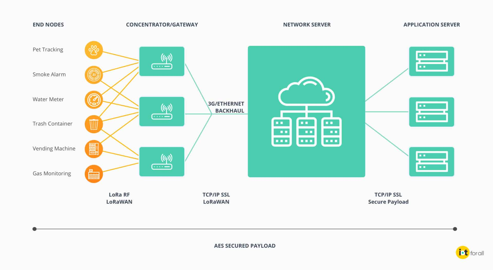
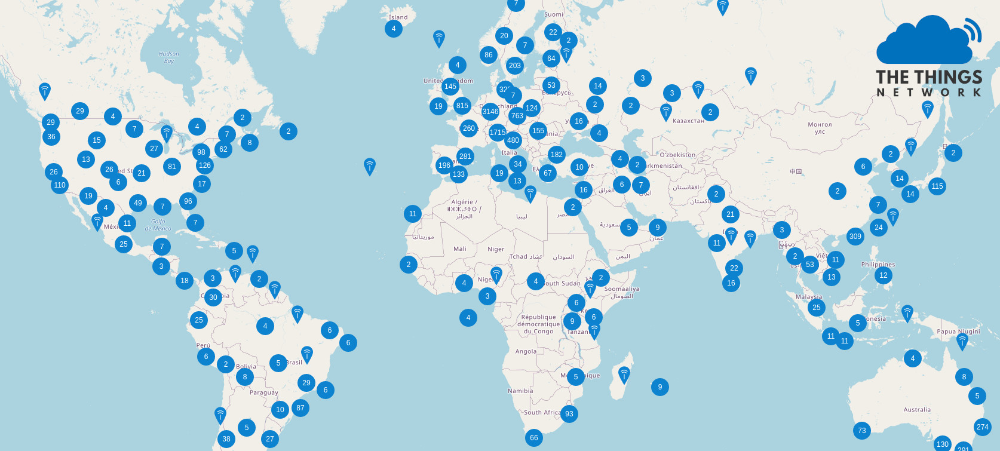
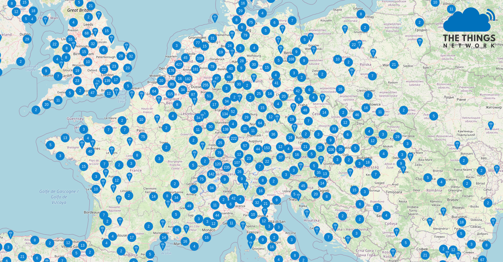
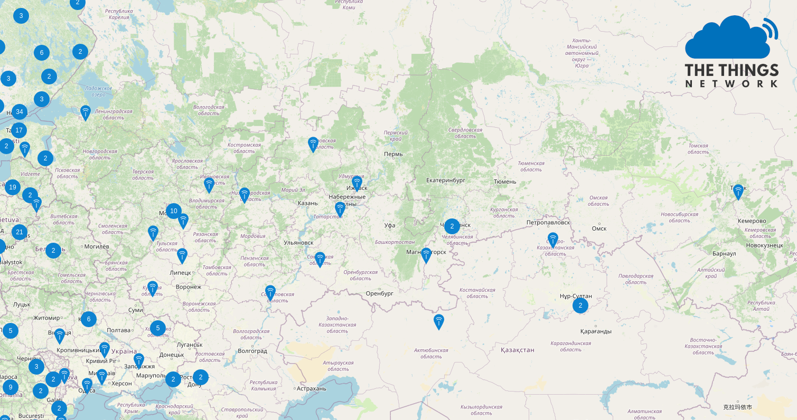
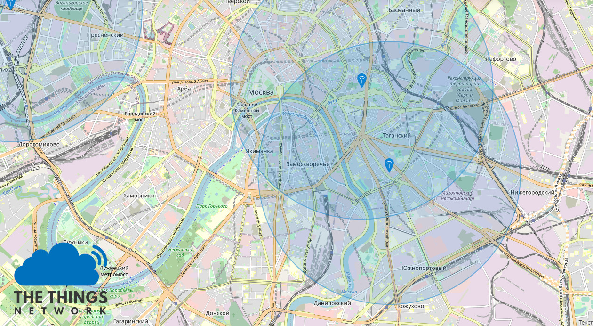
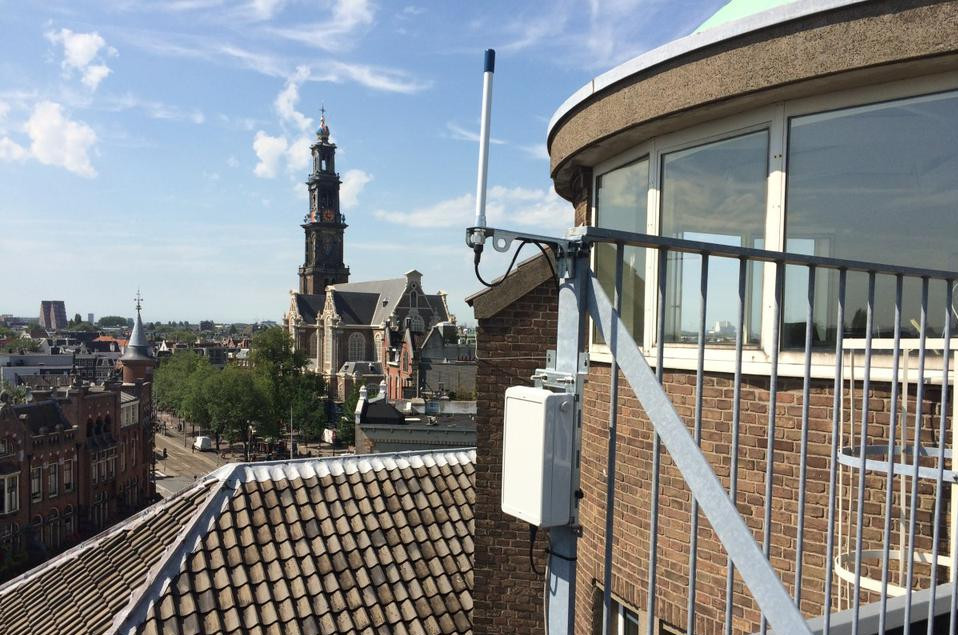
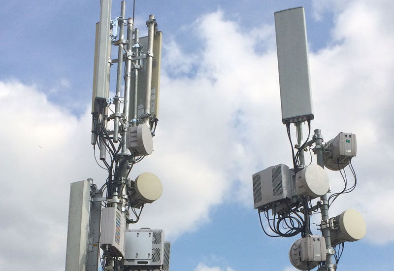

LoRa
Энерго-эффективная сеть дальнего радиуса действия
LoRa
Это что-то вроде WiFi
но совсем не тратит электричество
и работает на километры
План
Интернет вещей
Сети интернета вещей
Технологии LoRa
Концепция умнного города
Интернет вещей
Способы взаимодействия устройств и систем между собой и с окружающим миром
при помощи различных технологий связи
Интернет вещей
Порождение маркетологов, когда чайник "подключают" к интернету, а ценник поднимают в 3 раза
Интернет вещей
Был придуман сотовыми операторами, когда у них кончились люди, они решили подключать вещи
Consumer IoT
- Умный дом
- Бытовая техника
- Носимая электроника
Consumer IoT
- Часто бесмысленен
- Усложняет использование
- Снижает надежность
- Повышает радио-энтропию
Технологии связи
Wi-Fi, Bluetooth, LTE, 3G
ZigBee, Li-Fi, Z-wave
Industrial IoT
настоящий интернет вещей
Industrial IoT
- Умный город
- Промышленность
- Сельское хозяйство
- Логистика
Технологии связи
LTE, 3G, NFC, RFID
LPWAN - LoRa, SigFox, ...
LPWAN
Low-Power Wide-Area Network
энергоэффиктивные технологии передачи телеметрии и сигналов управления на большие расстояния
Что не так с 5G/4G/3G?
- Цена устройств и БС
- Недостаточное число подключений/БС
- Низкая энергоэффективность
- Монополия ОпСоС'ов на услугу/частоты
Характеристики LPWAN систем
- Самодостаточнoсть, независимость от сотовой связи и интернета
- Очень низкое энергопотребление
- Работа на больших расстояниях, сравнимых с сотовыми сетями
- Десятки тысяч подключений на одной БС
Технологии
LoRaWANGoodWANSigFoxWeightless-PIngenuNB-IoTЖилищно-коммунальное хозяйство
удалённый сбор показаний приборов учёта: воды, тепла, газа, электричества
Сельское хозяйство
контроль влажности и температуры почв, наблюдение за освещённостью и уровнем солнечной радиации, наблюдение за состоянием складов и овощехранилищ
Безопасность и охранные системы
резервирование каналов связи, контроль проникновения, контроль затопления помещений, контроль пожарной безопасности
Системы городского управления
управление освещением, наблюдение за автомобильными потоками, контроль занятости парковочных мест, контроль температуры, шума, влажности, освещённости, загрязнения воздуха и тому подобного
Экологический мониторинг
контроль качества воздуха и воды, контроль уровня воды в реках и озёрах, наблюдение за пожарной опасностью в лесах
Строительство
контроль оборудования, наблюдение за параметрами конструкций и зданий
Медицинна
носимые устройства, удаленный мониториг состояния здоровья
Производство и системы снабжения
контроль параметров оборудования, наблюдение за состоянием грузов
LoRa
Long Range
Методика модуляции радио-сигнала, устойчивая к помехам и позволяющая с минимальными затратами энергии передавать данные на большие расстояния
Преимущества
- Энергоэффективность
- Высокая дальность
- Хорошее проникновение в городской застройке
- Устойчивость к шуму / интерференции
- Не требует лицензирования частот
Специфика
- Низкая пропускная способность
Long Range Wide Area Network
Открытый стандарт глобальной сети на базе LoRa, определяющий способы коммуникации, адресацию устройств, шифрование, передачу данных в интернет
Long Range Wide Area Network
LoRaWAN
Насчитывает 148 провайдеров в 162 странах
LoRaWAN / TTN coverage
LoRaWAN / TTN coverage
LoRaWAN / TTN coverage
LoRaWAN / TTN coverage
LoRaWAN base station ~ $300 - 1 000
4G base station ~ $20 000 - 90 000
LoRa Alliance
Создан в 2015
Среди них IBM, Amazon, Alibaba, Cisco
Города реализующие концепцию
Amsterdam, Barcelona, Columbus, Ohio, Copenhagen, Dubai, Dublin, Kyiv, London, Madrid, Malta, Manchester, Milan, Milton Keynes, Moscow, New Songdo City, New York, San Leandro, Santa Cruz, Santander, Shanghai, Singapore, Stockholm, Taipei
Для многих направлений развития требуется
- Получения данных в реальном времени
- Сбор данных с больших площадей, множества удаленных точек
- Эффективные и дешевые каналы передачи данных
Управление ресурсами
Энерго и водоснабжение
Безопасность и медицина
Системы экстренного реагирования
Мобильность
Повышениее эффективности транспортной сети, управление трафиком
Экология
Контроль уровня загрязнения и шума, управлени отходами
Интернет вещей не про WiFi чайники
Это история о том, как мы наделили неживое способностью мыслить и дали ему голос
И прямо сейчас, на наших глазах, у городов зарождается новая нервная система
Каждой клетке этого организма, каждому зданию, квартире, улице, фонарю, машине на дороге - есть что рассказать городу
И технологии созданные для людей здесь плохо подходят
Поэтому появилась LoRa - сеть для общения машин, способная объеденить миллиарды устройств